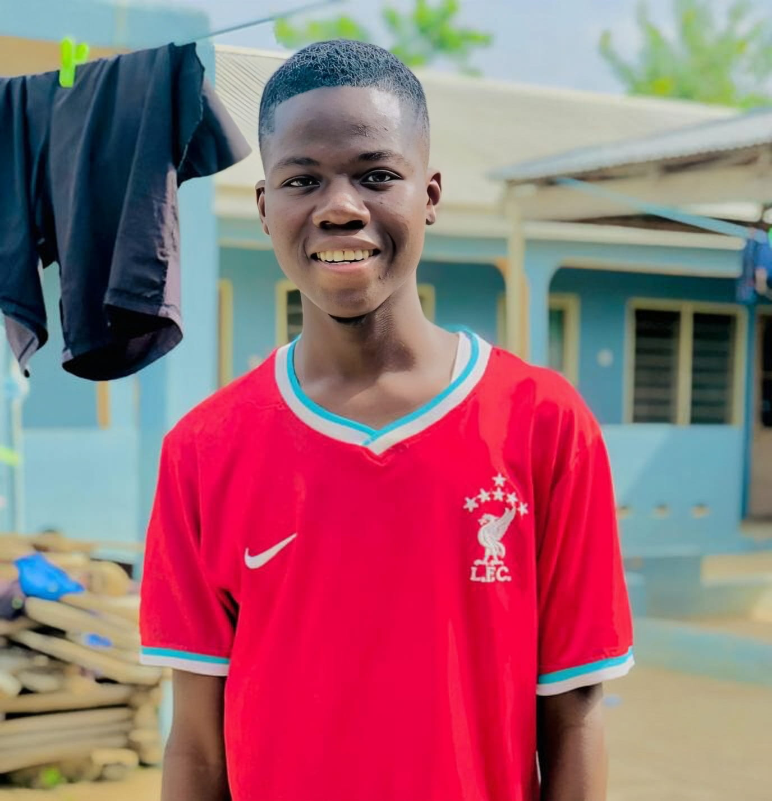

Mutaru Abdul Kudus(C.E.O)
At Kudus Graphic Design and Web Development Center, we're passionate about helping
businesses succeed. Our team of experts has years of experience in graphic design
and web development, and we're dedicated to providing exceptional service and
support. We're committed to staying up-to-date with the latest trends and
technologies, so you can trust that your project is in good hands. Whether you're
looking for a partner to help you achieve your business goals or just need some
expert advice, we're here to help.
 0552122264
0552122264 0205416983
0205416983 mutaruabdulkudus08@gmail.com
mutaruabdulkudus08@gmail.com